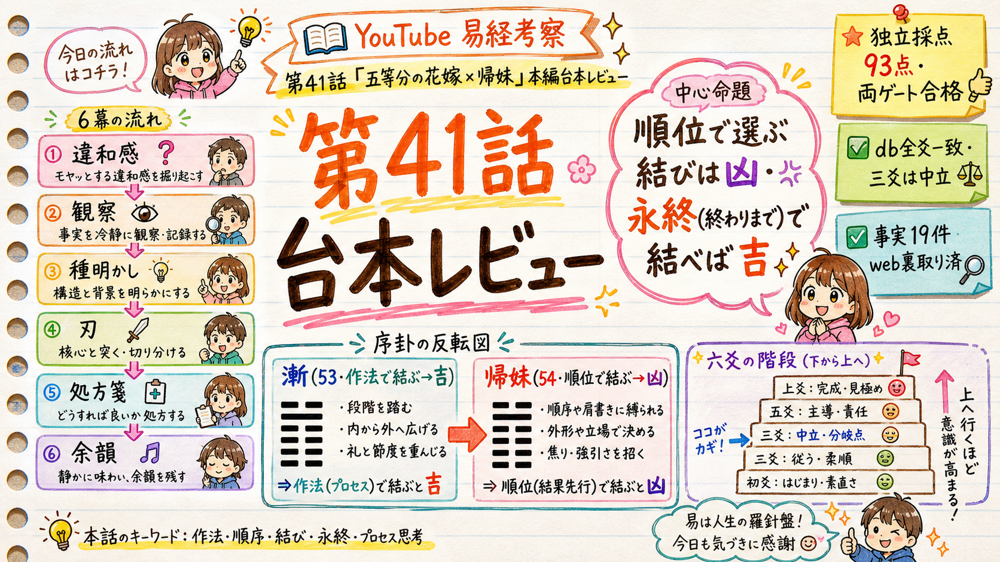

essay-episode Step2 の台本承認ゲート。通し読みして、このまま音声・ビジュアルへ進めてよいかご判断ください（本編は約8分・29シーン）。

漸(53・作法で結ぶ→吉/ep19既出)→帰妹(54・順位で結ぶ→凶) の反転。六爻＋象辞「永終知敝」で処方箋スマホの連絡先を、心の中でこっそり並べ替えたことは、ありませんか。この人は本命、この人はとりあえずキープ。予定を入れる順番も、返信を返す速さも、気づけば自分の中の順位で決めている。誰にも言わないけれど、たしかにやっている、あの感じです。
不思議なのは、そうやって一位に選んだ相手と、なぜか長くは続かなかったりする。逆に、順位なんてつけていなかった人と、気づいたら一番長くいた。順番で選んだはずなのに、順番どおりにはならない。今日は、その話です。
五等分の花嫁、という作品があります。同じ顔をした五つ子の姉妹に、上杉風太郎という一人の家庭教師がつく。一花、二乃、三玖、四葉、五月。読んでいる側も、いつのまにか推しの順位をつけて、この子が一番、と競ってしまう。そういう作品です。
最後に風太郎が結ばれたのは、四葉でした。四女の、四葉です。ここで面白いのは、四葉が五人の中で、一番「主役らしくなかった」ことです。派手さで一位を取りにいくタイプではない。むしろ、自分をいつも後ろに置く子でした。
順番の入れ替わりは、他の作品でも起きます。とらドラの高須竜児が、最初にまっすぐ好きだったのは、櫛枝実乃梨でした。心の中の一位は、はっきりみのりんだった。でも最後に結ばれるのは、順位の外にいたはずの、逢坂大河なんです。
四葉は、姉妹みんなが風太郎を好きだと気づいていました。だから、自分だけが幸せになるのが怖くて、罪悪感で、自分の順位をいつも最下位に下げていた。好きなのに、上杉さんが嫌いです、と嘘までついて、そばを離れようとするんです。
そして、もう一つ。二人には、子どもの頃の接点がありました。京都の修学旅行で、盗撮を疑われて孤立した風太郎を、たった一人助けた女の子。それが、姉妹とはぐれていた四葉だったんです。物語の一番はじめの原点が、四葉だった。
ただ、ここが大事なところで。風太郎は、その思い出の子が四葉だと知らないまま、今の四葉を好きになっていくんです。原点だから選んだのではない。順番が一番だから選んだのでもない。過去とは関係なく、目の前の四葉に、惹かれていった。
結婚式の場面が、象徴的です。五つ子が、全員まったく同じ花嫁衣装を着て並ぶ。その中から、風太郎は妻である四葉を当てる。それだけでなく、残りの四人も、一人ずつ全員を見分けてみせるんです。一人を選んでも、誰のことも、順位で切り捨てなかった。
ここで、三千年前の本の話をさせてください。易経という、古代中国の本があります。人に起きる変化のパターンが、六十四個、順番に並べて記録されている。その中に、帰妹、という形があります。若い娘が、嫁いでいく、という意味の卦です。
この帰妹という卦、最初の一言が、なかなか厳しいんです。進めば凶、良いことは無い。嫁ぐという、おめでたいはずの話に、いきなり凶と書いてある。なぜか。それは、位を無視して、勢いで結ばれることへの、戒めだからです。
面白いのは、その一つ前です。帰妹の直前には、漸、という卦が置かれている。これも、娘が嫁ぐ卦なんです。ところがこちらは、嫁いで吉、と書いてある。同じ嫁ぐ話が、隣同士で、かたや吉、かたや凶。並べたのは偶然ではありません。
何が違うのか。漸は、段階を一つずつ踏んで進む結び方です。順序を大事にして、時間をかける。帰妹は、その手順を飛ばして、勢いと位取りで結ぶ結び方です。つまり隣り合う二つの卦は、誰と結ばれるかではなく、どう結ばれるか、を分けているんです。
これが、種明かしです。惹かれる順番と、結ばれる順番は、そもそも別の層の話なんです。誰を先に好きになったか、という順位。それとは別に、どう結ぶか、という作法がある。易経は、結末を決めるのは前者ではなく、後者だと言っている。
六爻図帰妹の絵を、見てみます。六本の横線を、下から積み上げた形です。この卦は、その線の位置が、あちこち噛み合っていない。若い勢いが、収まるべき場所に収まっていない。位が、ずれている。だから、進めば凶、と戒められているんです。
ここで、主語をつなげておきます。位を気にして嫁ぐ娘と、人に一位二位をつけて選ぶ私たち。方向は逆に見えて、実は同じことをしている。位で、縁を測っている。帰妹の凶は、嫁ぐ側だけの話ではなく、順位で人を並べる、私たちの話でもあるんです。
冒頭の、連絡先の並べ替えに戻ります。私たちは、人を順位で値踏みします。本命と、キープ。勝ち組と、負け組。SNSは、本命はどっちだ、という順位当てで盛り上がる。帰妹は、その順位のまま突き進むこと自体が、凶だと言っているんです。
その刃は、キープにされた相手にも向かいますが、いちばん深く刺さるのは、自分にです。人を順位で並べる目は、必ず、自分自身にも順位をつけます。あの人より下、この人より上。四葉が自分を最下位に下げ続けたあの苦しさは、他人事ではないんです。
では、どうするか。帰妹には、絵の下に短い言葉が添えてあります。終わりを、永く見据えて、どこが破れるかを知っておけ。これが、処方箋の背骨です。順位で選ぶな。終わりまで添えるか、で選べ。今の順位ではなく、続く時間で見よ、ということです。
帰妹の六本の線は、下から順に、その心構えを一段ずつ教えてくれます。一番下の段は、こう言います。位が下でも、分をわきまえて、まず一歩を踏み出せば、それで吉。順位が下だから失格、ではない。低い場所からでも、縁は始められるんです。
二段目。片目でも、見えるものは見える。相手に失望する瞬間が来ても、孤独の中で、自分の芯だけは保って添っていく。忠実さは、相手の完璧さに預けるものではなく、自分の内側に持っておくものだ、と。相手の点数が下がっても、順位を付け替えない、ということです。
三段目は、少し違います。ここは、良い悪いを言わない段なんです。低い立場で嫁いでいく姿を、判断も戒めも足さずに、ただそのまま見せている。帰妹は戒めの卦で、六つの段すべてが、きれいな上り階段になるわけではありません。位が高いか低いか、それだけでは吉凶は決まらない。ここは、そういう中立の踊り場として、静かに置かれているんです。
四段目。時期が来なければ、待てばいい。遅い縁は、遅いなりに、ちゃんと時が来る。順番が遅いことと、来ないことは、違うんです。焦って順位を繰り上げなくていい。四葉が、最後の最後まで自分を出さずに待っていたのは、まさにこの段の姿でした。
五段目。ここは、位のいちばん高い人の段です。高貴な身分の娘が嫁ぐのに、その衣装は、添えの者よりも質素だった、と書いてある。位が高くても、装いや見栄えではなく、中身で結べ。順位や肩書きではなく、実で選べ、という段です。
そして一番上の段は、こう締めます。女性が、籠を捧げ持っているのに、その籠には、実が入っていない。形だけの結びは、最後に空っぽになる、という絵です。順位や体裁だけで結んでも、中身がなければ、手には何も残らない。永く終える覚悟が、その籠の中身なんです。
こうして六段を上ると、四葉が最下位から選ばれた理由が、見えてきます。彼女の順位が上がったからではありません。順位で測るのをやめて、終わりまで添えるか、で見たとき、いちばん実の詰まった籠を差し出していたのが、四葉だった。作法が、漸へ、抜けていたんです。
だから、明日からできることは、ひとつです。誰かを、心の中で順位に並べたくなったら、その順位表を、いったん置く。この人と、終わりまで、どれだけ一緒にいられそうか。破れそうなのは、どこか。順位ではなく、その二つだけを、静かに見てみる。
正直に言うと、私にも、人をこっそり順位づけする癖は、あります。無くしきるのは、たぶん難しい。ただ、順位表を置いてみる、その一瞬だけは、誰にでもできる。それだけで、見える相手が、少し変わるんです。
惹かれた順位は、添う相手を決める資格を、持っていません。決めるのは、終わりまで添えるかどうか、それだけです。順位を手放した人にだけ、順位の外に立っていた本命が、ちゃんと見える。三千年前の本は、そう記録しています。